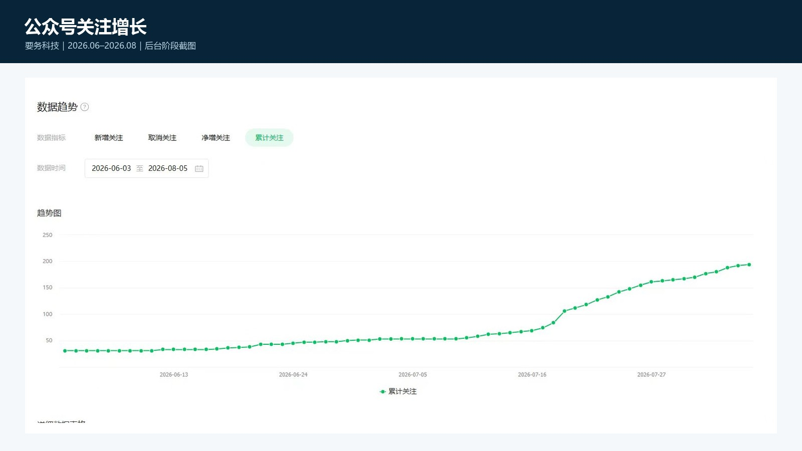
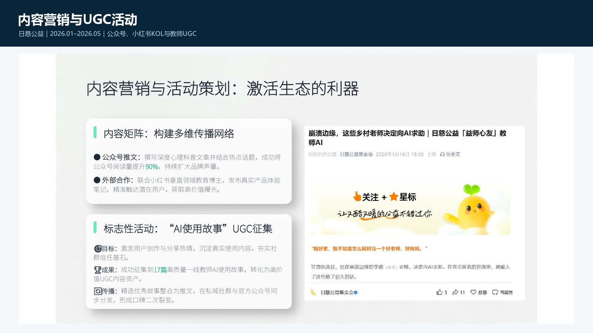
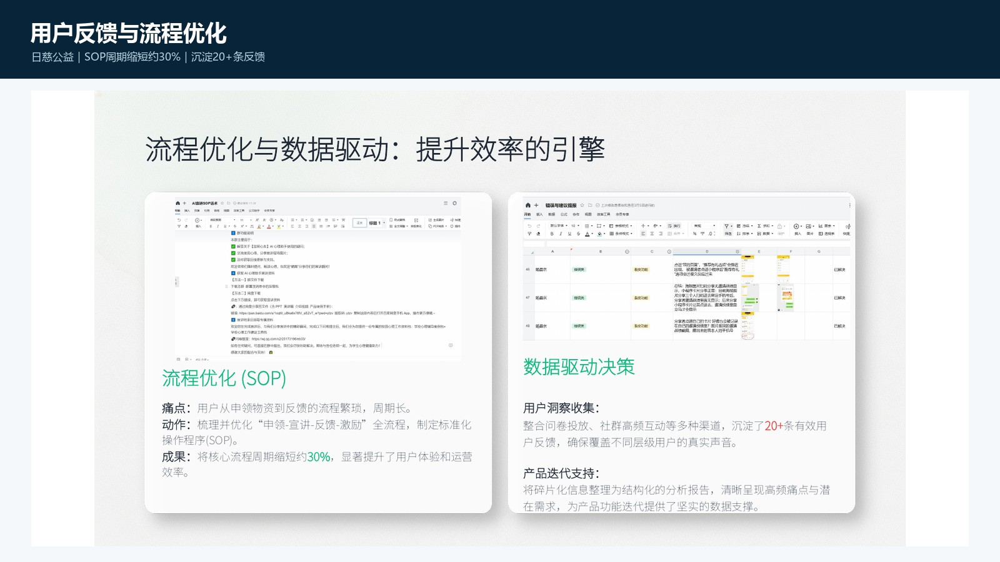
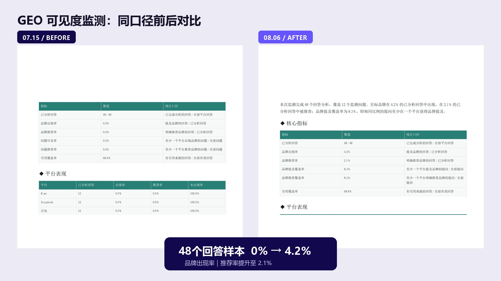
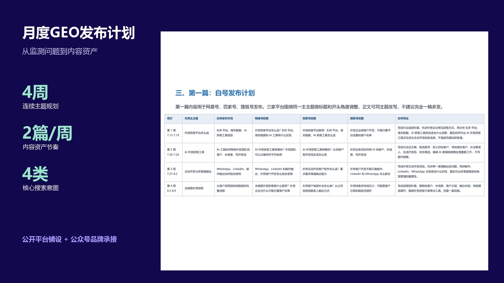

要务科技
初创项目内容运营实习
公众号运营小红书内容GEO 策略线索转化
查看案例 ↓27届硕士｜产品内容运营｜美的定向应聘
从产品理解、选题生产到多平台发布与数据复盘，
用真实项目说明我做过什么、如何做，以及结果如何。
目标岗位
产品内容运营PRODUCT CONTENT OPERATIONS个人求职应聘材料，非美的集团官方网站或官方发布内容。
EXPERIENCE MAP
作品按技能归档，但每项都标明所属单位、发生时间和个人职责，便于快速判断经验来源。
VERIFIED RESULTS
指标来自后台截图、公开页面或项目材料。不同统计区间单独说明，不补写未留存数据。
要务科技｜完整实习阶段
要务科技｜公众号阶段累计
要务科技｜进入业务承接
要务科技｜负责人确认
公众号内容运营
要务科技CONTENT STRATEGY · PUBLISHING · REVIEW
负责选题、资料整理、内容组织、发布和基础复盘。围绕外贸获客、行业趋势与客户问题，将复杂业务信息转化为可阅读、可传播的公众号内容。


BUSINESS LOOP
在初创项目整体成交频次较低、以渠道转介绍为主的背景下，通过线上引入的客户线索促成 1 单成交，并获得负责人确认。
公开页面不披露客户、负责人身份及金额，只展示成交事实。
公众号视觉排版
华师研究生会EDITORIAL LAYOUT
负责学院研究生会活动推文排版，处理信息层级、图片节奏与移动端阅读体验。两篇作品均由学院官方公众号发布并署名。
视频策划与剪辑
华师研究生会VIDEO EDITING
完成哲学戏剧活动回顾视频剪辑，组织画面顺序、节奏和字幕信息，并由华南师范大学哲学与社会发展学院官方视频号发布。

小红书 / KOL / UGC
日慈公益基金会CONTENT COLLABORATION
参与教育类 KOL 筛选、沟通及合作落地；组织教师真实体验与 UGC 征集。有限预算下实际落地 1–2 个 KOL 合作，不虚构曝光或转化数据。
KOL 筛选与沟通、公众号内容协作、教师故事征集和素材整理。
公众号阅读提升 90%，沉淀 17 篇教师 UGC 故事。
运营 15+ 教师社群，覆盖 2,500+ 种子用户。

用户反馈与流程优化
日慈公益基金会USER INSIGHT · SOP
参与“益师心友”AI 心理助手 0–1 推广，在教师社群答疑、收集问题并归类反馈，支持产品迭代和推广 SOP 优化。

GEO 内容策略
要务科技DATA-DRIVEN CONTENT
围绕用户搜索意图和竞品占位规划 GEO 主题，通过固定问题集观察品牌在 AI 回答中的出现率与推荐率变化。
同口径样本：12 个问题 × 4 个平台 = 48 个回答


ROLE FIT
产品内容岗位需要的不只是写作，而是产品理解、内容生产、协作推进和结果复盘的组合能力。
从功能、场景和用户问题中组织内容主题，兼顾信息准确性与可读性。
理解不同平台的内容语境，并有从筛选沟通到有限规模合作落地的真实经验。
关注阅读、转发、线索和成交，而不是只统计发布数量。
CET-6，全国大学生英语竞赛一等奖，可支持英文资料理解与跨角色沟通。
READY TO CONTRIBUTE